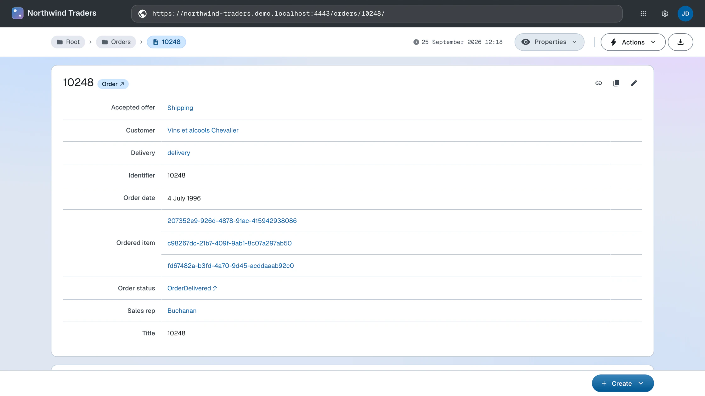
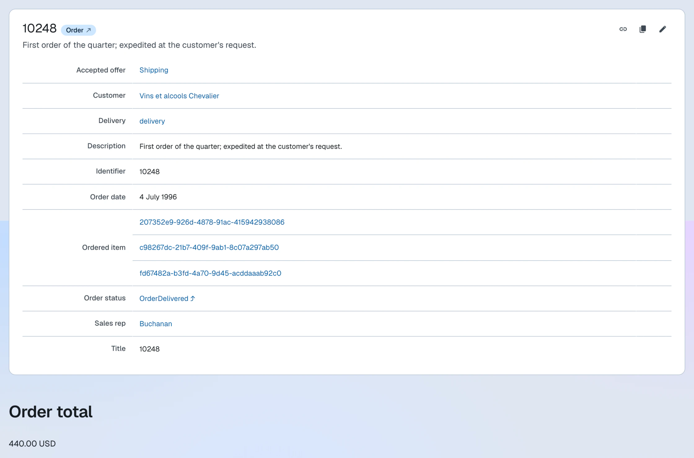
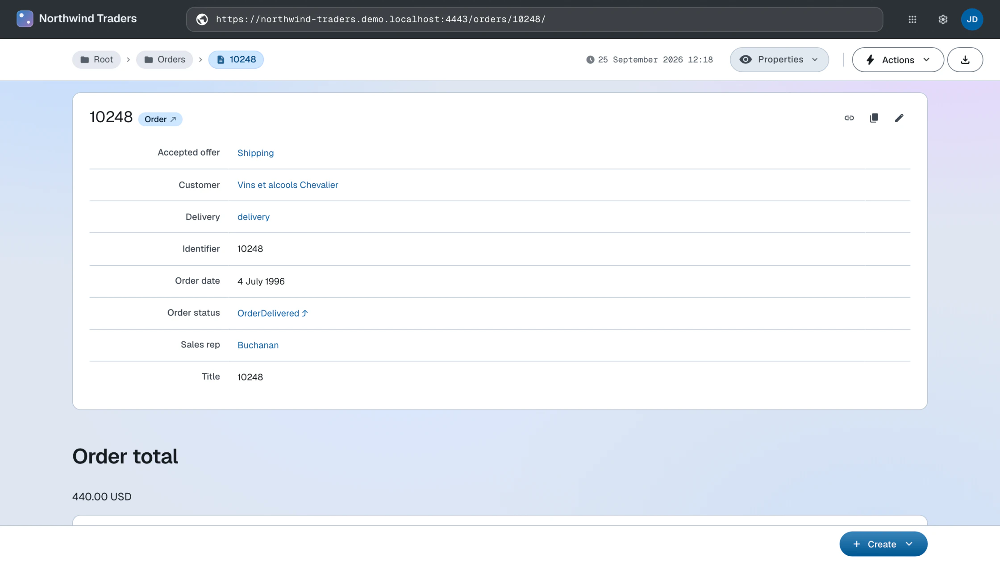

Change layout
How to customize a dataspace's layout and the way its resources are rendered
LinkedDataHub's user interface is simply a rendering of the underlying Linked Data resource descriptions, which are exposed via the HTTP API.
LinkedDataHub provides XSLT stylesheets that render a default UI layout. When building a dataspace, however, you may want a custom layout. The recommended approach is a new stylesheet that imports the system stylesheet and overrides only the templates you need, reusing the rest of the layout.
Default layout
The examples below run on a Northwind order document:
its graph holds the order (the document's topic) and the order's line items, each
carrying its own schema:price line total.
Out of the box, the default layout renders the order and each line item as a plain resource description.

Create a stylesheet
Create a new XSLT 3.0 stylesheet and use <xsl:import> to import the system stylesheet static/com/atomgraph/linkeddatahub/xsl/layout.xsl:
<?xml version="1.0" encoding="UTF-8"?>
<xsl:stylesheet version="3.0"
xmlns:xsl="http://www.w3.org/1999/XSL/Transform"
xmlns="http://www.w3.org/1999/xhtml"
xmlns:rdf="http://www.w3.org/1999/02/22-rdf-syntax-ns#"
xmlns:foaf="http://xmlns.com/foaf/0.1/"
xmlns:schema="https://schema.org/"
xmlns:ac="https://w3id.org/atomgraph/client#"
xmlns:ldh="https://w3id.org/atomgraph/linkeddatahub#"
exclude-result-prefixes="#all">
<xsl:import href="https://localhost:4443/static/com/atomgraph/linkeddatahub/xsl/layout.xsl"/>
<!-- overriding templates go here -->
</xsl:stylesheet>
(Imports under the dataspace's /static/ path resolve to local webapp files, so no HTTP round-trip is made.)
Configure the dataspace
Either upload the XSLT file or mount it using Docker and docker-compose.override.yml:
services:
linkeddatahub:
volumes:
- ./files/northwind.xsl:/usr/local/tomcat/webapps/ROOT/static/com/atomgraph/linkeddatahub/northwind/xsl/layout.xsl:ro
Then change the value of ac:stylesheet on the dataspace with base URI https://localhost:4443/ to the URL of the stylesheet. The value has to be an absolute URL on the dataspace's
own origin:
<urn:linkeddatahub:apps/end-user> a lds:Dataspace ;
...
ac:stylesheet <https://localhost:4443/static/com/atomgraph/linkeddatahub/northwind/xsl/layout.xsl> ;
...
You will need to restart LinkedDataHub's Docker service for the new stylesheet to take effect.
Augment output
Keep the default output using <xsl:apply-imports> or <xsl:next-match> and add new output before/after it.
Here the order's rendering gains a computed total, summed over the line items in the
graph:
<xsl:template match="*[foaf:isPrimaryTopicOf/@rdf:resource = ac:absolute-path(ldh:base-uri(.))][rdf:type/@rdf:resource = 'https://schema.org/Order'][key('resources', schema:orderedItem/@rdf:resource)]" priority="1">
<xsl:next-match/>
<h3>Order total</h3>
<p>
<xsl:value-of select="format-number(sum(key('resources', schema:orderedItem/@rdf:resource)/schema:price), '#,##0.00')"/>
<xsl:text> USD</xsl:text>
</p>
</xsl:template>
The pattern matches resource descriptions that are the primary topic of the requested
document (i.e. its order), are typed schema:Order, and have line items present in the RDF graph.
With the overriding template, the order page shows the computed total after the order's default description.

Override output
To completely change the layout without keeping the default one, use the same logic
as for augmenting it, but do not call <xsl:apply-imports>/<xsl:next-match>.
Suppress output
Having summed the line items into a total, you may no longer want each line item rendered
as its own resource description, nor the raw
schema:orderedItem rows in the order's property list.
You can specify an empty template at any level (graph/property/resource) to disable output of that layout mode. This suppresses the line item resources:
<xsl:template match="*[@rdf:about = key('resources', key('resources', ac:absolute-path(ldh:base-uri(.)))/foaf:primaryTopic/@rdf:resource)/schema:orderedItem/@rdf:resource]"/>
The pattern matches resource descriptions that are line items of the current document's primary topic.
And this suppresses the property rows:
<xsl:template match="*[foaf:isPrimaryTopicOf/@rdf:resource = ac:absolute-path(ldh:base-uri(.))]/schema:orderedItem" mode="ac:PropertyEditor"/>
The pattern matches schema:orderedItem properties of a resource that is the primary topic of the current document.
With the suppressing templates, the order page shows the order and its total, with the line items no longer repeated below.

Read more about the XSLT stylesheets or continue with the Build apps guide.